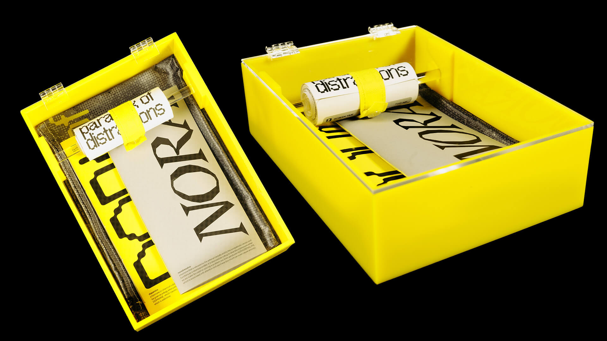

paradox of distractions
Project Editorial Design
Date April 2024
DescriptionAcademic Project — Editorial Project Manifesto;
In a world flooded with information, our attention has become precious, constantly blocked by notifications and digital distractions. Despite vast access to knowledge, constant connectivity often leaves us overwhelmed. In moments of boredom, we always turn to our smartphones. However, in the midst of this connectivity, we wonder how we can turn digital moments into intellectual opportunities? This manifesto analyses the paradox of distractions and information overload, with the aim of inspiring positive changes in our lives.
Exhibited on It's a Mad Mad Mad Mad World in Casa do Jardim da Estrela, july 2024
Exhibited on It's a Mad Mad Mad Mad World in Casa do Jardim da Estrela, july 2024
-

-

- 